Estádios Oficiais
.jpg)
MetLife Stadium
📍 Nova Jersey, EUA
👥 Capacidade: 82.500
⚽ Jogos: 8
🏆 Receberá a Final da Copa do Mundo 2026.
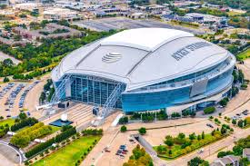
AT&T Stadium
📍 Dallas, EUA
👥 Capacidade: 92.000
⚽ Jogos: 9
🏆 Um dos maiores estádios da competição.
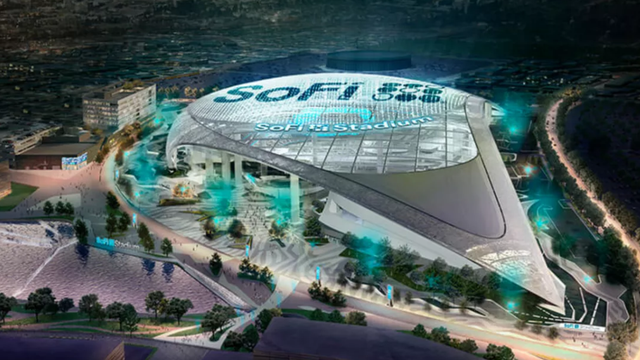
SoFi Stadium
📍 Los Angeles, EUA
👥 Capacidade: 70.000
⚽ Jogos: 8
🏆 Um dos estádios mais modernos do mundo.
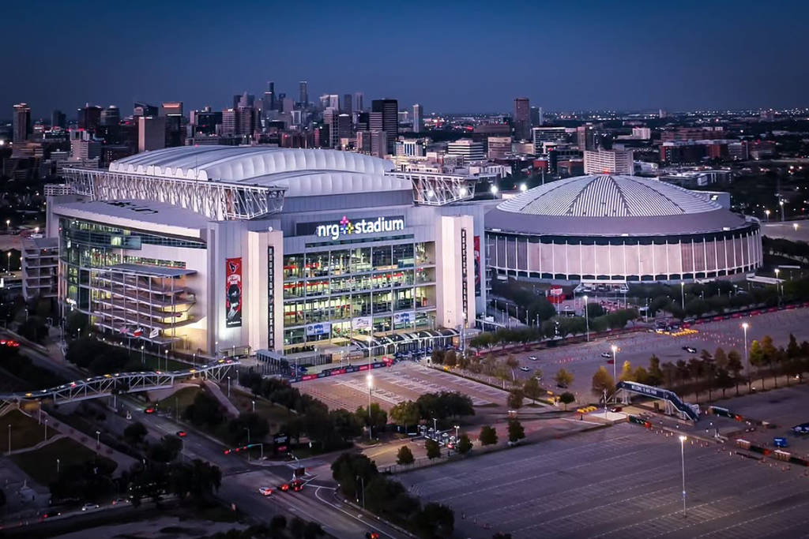
NRG Stadium
📍 Houston, EUA
👥 Capacidade: 72.000
⚽ Jogos: 7
🏆 Importante sede da fase de grupos.
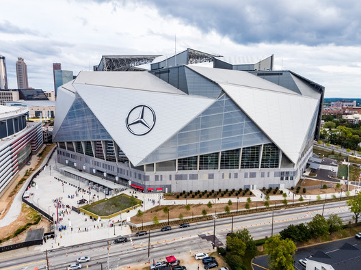
Mercedes-Benz Stadium
📍 Atlanta, EUA
👥 Capacidade: 71.000
⚽ Jogos: 8
🏆 Possui teto retrátil e telão gigante.
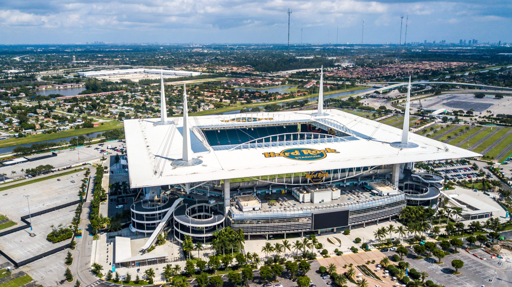
Hard Rock Stadium
📍 Miami, EUA
👥 Capacidade: 65.000
⚽ Jogos: 7
🏆 Também recebe corridas de Fórmula 1.
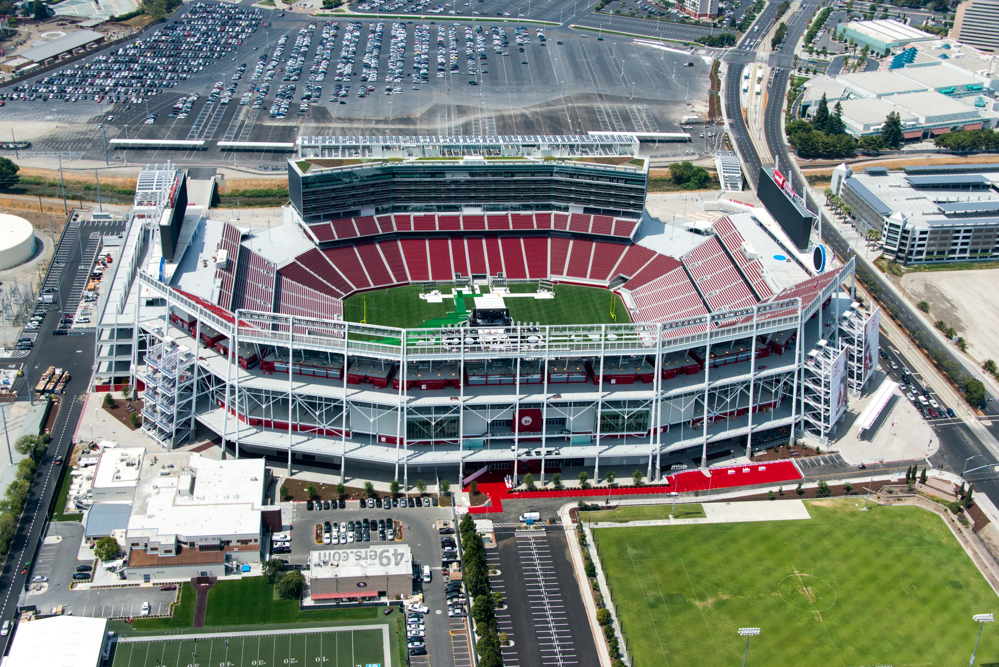
Levi's Stadium
📍 Santa Clara, EUA
👥 Capacidade: 68.500
⚽ Jogos: 6
🏆 Localizado no Vale do Silício.
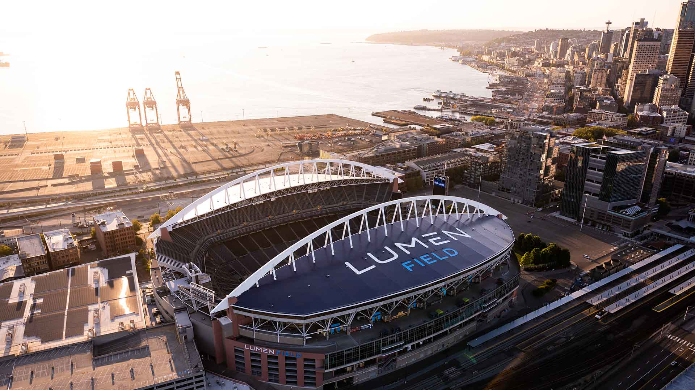
Lumen Field
📍 Seattle, EUA
👥 Capacidade: 69.000
⚽ Jogos: 6
🏆 Famoso pela torcida apaixonada.
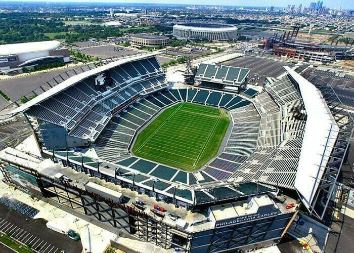
Lincoln Financial Field
📍 Filadélfia, EUA
👥 Capacidade: 67.500
⚽ Jogos: 6
🏆 Receberá partidas eliminatórias.
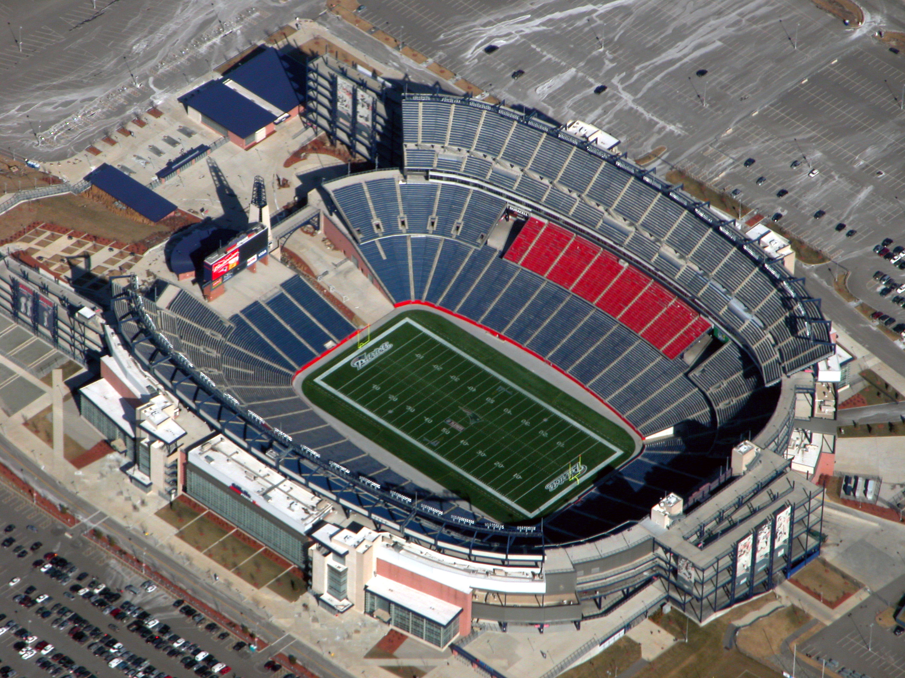
Gillette Stadium
📍 Boston, EUA
👥 Capacidade: 65.800
⚽ Jogos: 7
🏆 Casa do New England Patriots.
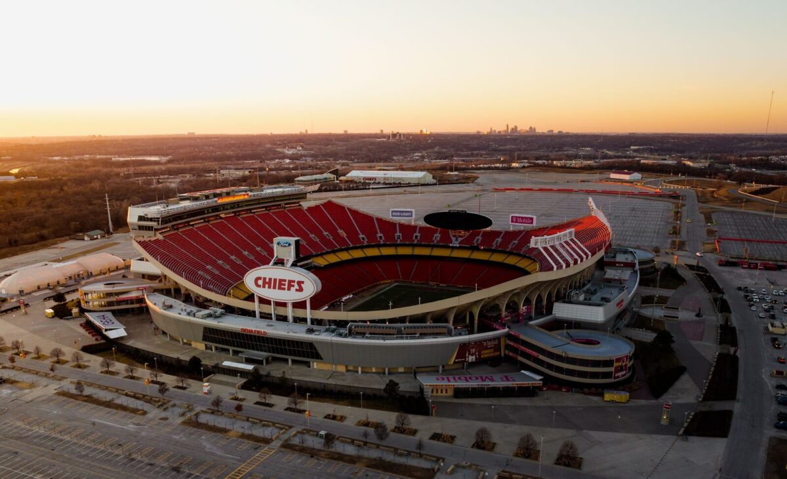
Arrowhead Stadium
📍 Kansas City, EUA
👥 Capacidade: 76.000
⚽ Jogos: 6
🏆 Um dos estádios mais barulhentos do mundo.

Estádio Azteca
📍 Cidade do México, México
👥 Capacidade: 87.500
⚽ Jogos: 5
🏆 Primeiro estádio a sediar três Copas do Mundo.
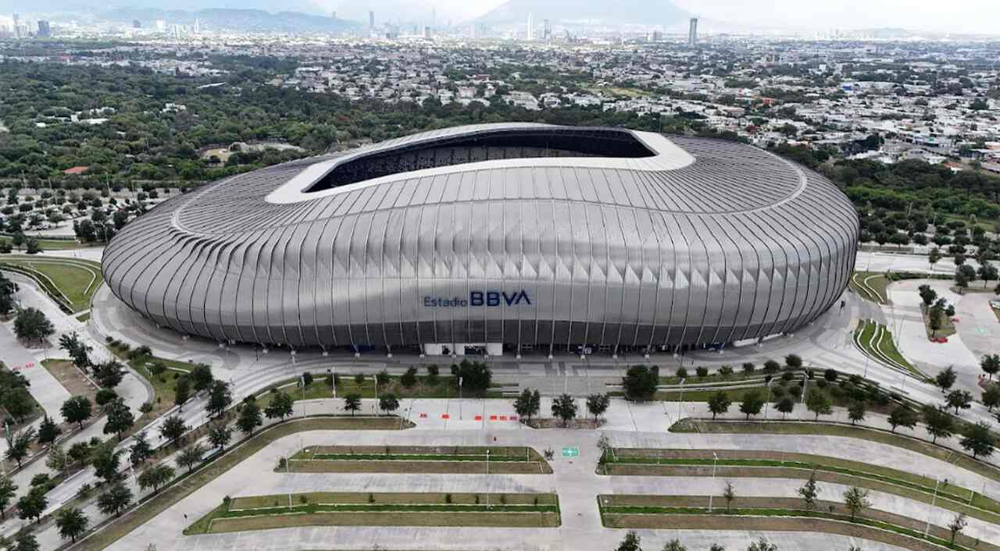
Estadio BBVA
📍 Monterrey, México
👥 Capacidade: 53.500
⚽ Jogos: 4
🏆 Um dos mais modernos da América Latina.
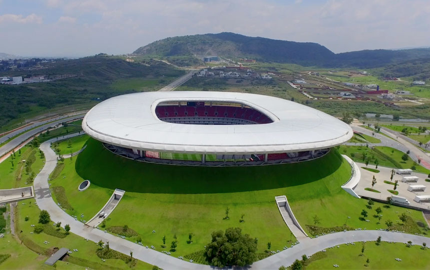
Estadio Akron
📍 Guadalajara, México
👥 Capacidade: 49.800
⚽ Jogos: 4
🏆 Casa do Chivas Guadalajara.
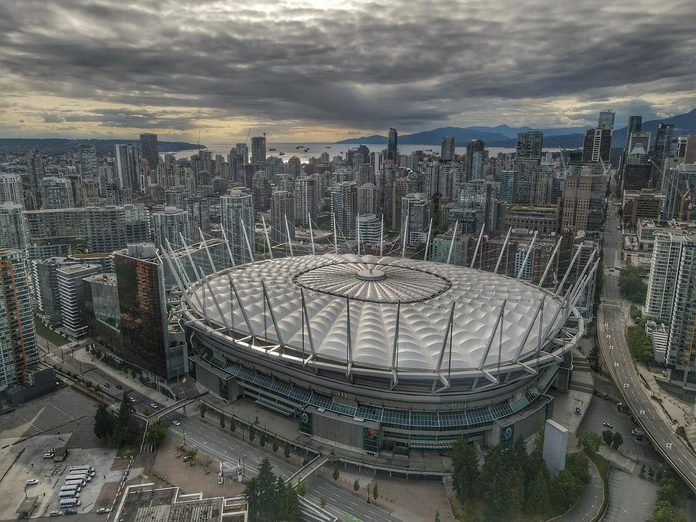
BC Place
📍 Vancouver, Canadá
👥 Capacidade: 54.500
⚽ Jogos: 7
🏆 Principal sede canadense da costa oeste.
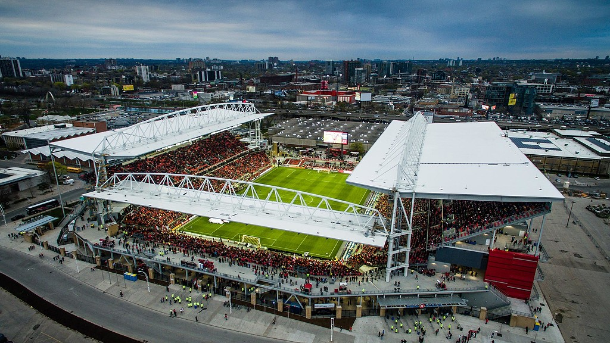
BMO Field
📍 Toronto, Canadá
👥 Capacidade: 45.000
⚽ Jogos: 6
🏆 Receberá partidas da fase de grupos e mata-mata.